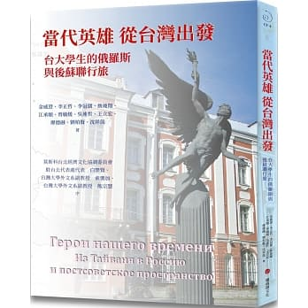
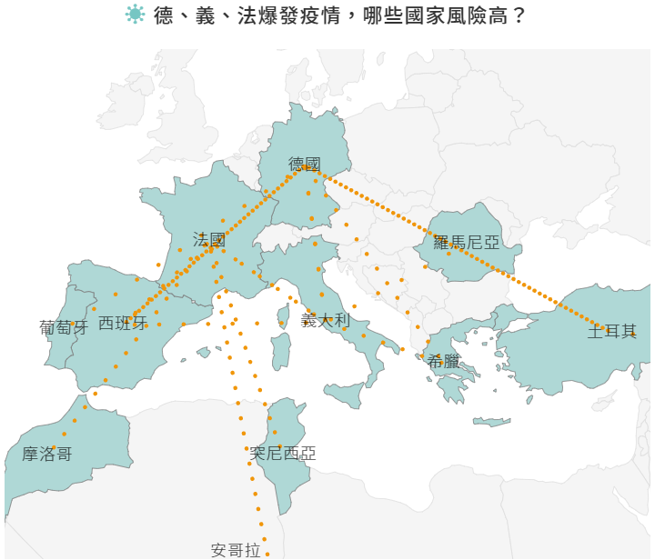
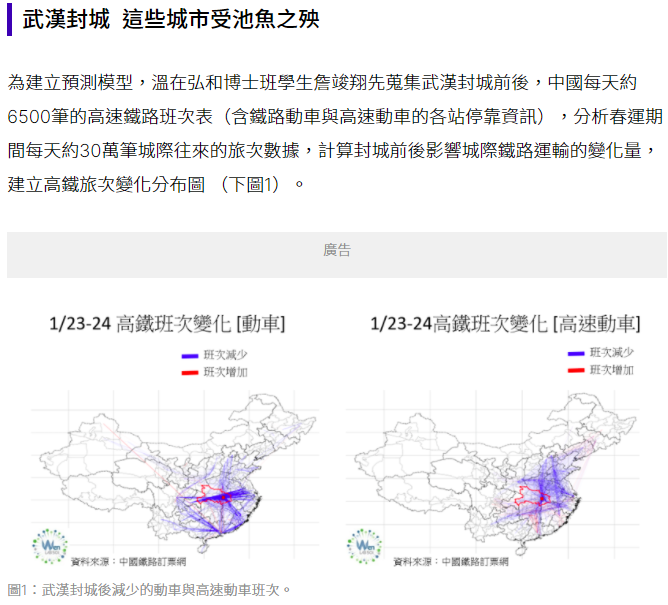
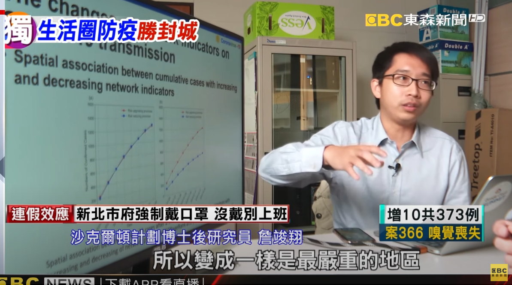
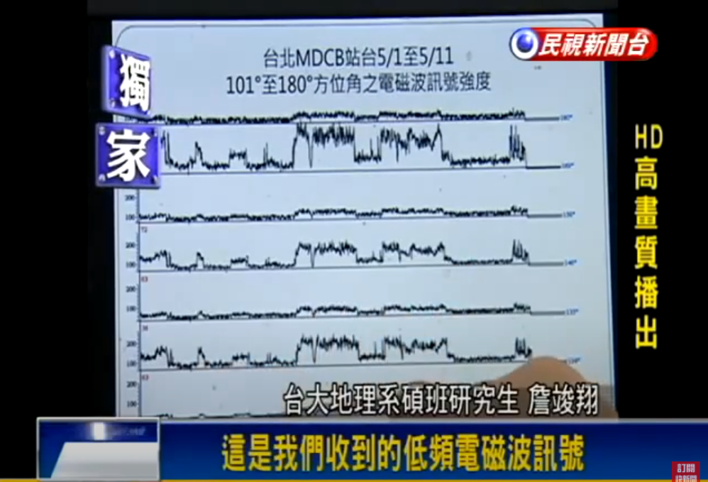

Publications
One Book, Four News Interviews, and Two Reports
Complex Network Analysis, Spatiotemporal Big Data Analysis, Artificial Intelligence, Clinical Data Analysis, Social Media Behavior, Starch Chemistry
-
Book in Russian
金威澄、李正哲、李冠儒、詹竣翔 (Михаил Чжэнь)、江承頤、曾毓媛、王立宏、吳連哲、廖德融、劉柏賢、沈祥茵(Nov. 17, 2021) 當代英雄從台灣出發–台大學生的俄羅斯與後蘇聯行旅(Герои нашего времени - С Тайваня в Россию и постсоветское пространств)。第40-15頁&第138-143 頁臺北市：櫻桃園文化出版有限公司。 [View Online]
Preface: 眼前這本書不是傳統概念的旅遊指南，這是一本由台大學生集體創作的旅行散文集，作者來自台灣大學各科系，共通點是在校修習至少一年的俄文後自行到俄國及前蘇聯各地遊學或旅行，他們的行腳範圍遍及七個國家的十四座市鎮：莫斯科、圖拉、喀山、卡爾梅克、庫魯什、聖彼得堡、巴庫、葉里溫、第比利斯、克里米亞、基輔、布列斯特、十字架山、伯力，他們忠實傳達了當地行旅或長時間居留的所見所聞、生活經驗、人際交流感受；文章的主題多采多姿：城鄉踏查、劇場演出、觀看足球賽、經濟情況、太空發展、書店、文學家托爾斯泰、俄式桑拿澡堂、宗教、高加索、克里米亞、烏克蘭、白俄羅斯、立陶宛、西伯利亞等，每位作者以多樣的角度為我們提供了珍貴的第一手見聞，無論是生活速寫、史地描繪、風俗民情、文化論述、社會行為觀察與現況，彷彿都為我們打開了一扇扇窗，讓我們深入了解這些遙遠的國度。這群作者不只以中文創作，同時也以俄文寫作，雙語版本並排書中，展現年輕世代優異的雙語表達能力與世界觀。
Chapter: 國家經濟成就展覽中心(О ВДНХ)，十字架山──悲傷、希望、和平與愛(Гора Крестов – место жертв, надежд, мира и любви).
-
News Interviews
Tzai-Hung Wen, Chun-Hsiang Chan (Apr. 27, 2021) 10 大關鍵圖表掌握新冠肺炎產經衝擊。天下雜誌。 [View Online]
德國學者研究發現，疫情爆發的城市多是航空業主要轉機點或重要機場，便捷的交通讓傳染病得以傳播至世界各角落。隨著疫情升溫，境外旅客讓各國如臨大敵，歐盟、美國紛紛關閉邊界，台灣也於3月18日禁止外籍旅客入境。哪些國家是境外移入地高風險地區呢？透過統計各國往來疫區地航班次數，台大地理系教授溫在弘團隊(台大地理環境資源系溫在弘教授及詹竣翔博士候選人)計算出219個國家的境外移入風險指數，中國、日本、美國為前三大移入風險最高的國家。研究團隊也以近期疫情最嚴重的5個國家，以航班往來密集程度計算出易被高風險國家輸出疫情的地區，除法國與北非國家航班較為密切外，南韓、伊朗、德國與義大利幾乎都是與周邊國家交流較多，數據顯示西班牙、希臘與土耳其可能為下一波疫情高峰國家。
-
Tzai-Hung Wen, Chun-Hsiang Chan (Mar. 5, 2021) 【口罩下的人#02】封城能擋疫情？台大教授算高鐵班次發現：周邊城市確診人數是其他城市的1.5 倍。未來城市| 天下雜誌。[View Online]
為建立預測模型，溫在弘和博士班學生詹竣翔先蒐集武漢封城前後，中國每天約6500筆的高速鐵路班次表（含鐵路動車與高速動車的各站停靠資訊），分析春運期間每天約30萬筆城際往來的旅次數據，計算封城前後影響城際鐵路運輸的變化量，建立高鐵旅次變化分布圖。武漢自古為交通要塞，有「九省通渠」的說法。近年，京漢鐵路、粵漢鐵路陸續建成；加上後續的國道、高速公路、高鐵、機場的建設，使武漢成為當代中國最重要的水陸空綜合交通樞紐之一。從圖中可見，武漢封城後，高鐵整體班次減少較多是主要運輸動線，包括滬漢蓉鐵路（上海—成都）、京廣鐵路（北京—廣州）與京九鐵路（北京—香港）等。這些旅次減少後，意味著中國鐵路運輸結構勢必有所轉變。原先會經過武漢的旅客，可能選擇其他鄰近的交通節點轉車，使這些城市的轉乘地位上升、產生新的人群聚集地點；但另一些城市，則因武漢封城而削弱的轉乘功能，也降低了人群乘車接觸感染的機率。「封城可能迫使旅程改變，導致人群聚集與接觸頻率的改變，也間接促成後續感染風險的改變」 。。。
-
Tzai-Hung Wen, Chun-Hsiang Chan, Fei-Ying Kuo (Apr. 6, 2021) 防堵疫情擴散台大研究團隊：生活圈防疫勝過封城。東森新聞。[View on YouTube]
 -
Tzu-How Chu, Chun-Hsiang Chan (Jan. 20, 2015) 測「超低頻電磁波」 可預測地震? 民視新聞。[View on YouTube]

-
Reports
Chun-Hsiang Chan (Jul. 2, 2021). 臺大地理系2021 年楊楠子人文學術講座：人口動態的前沿研究暨地理職涯發展的交流。國立臺灣大學理學院院刊第48 期：國際交流。臺北市：國立臺灣大學理學院。
-
Chun-Hsiang Chan, Yi-Yuan Shao (Apr. 15, 2021). Attending 2021 ICBC International Conference - Oneline Meeting Report. 7-11. Taipei. China Grain Products Research & Development Institute.